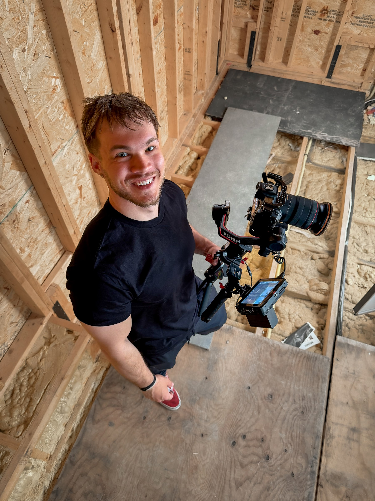

Calm Direction
You do not need to know how to pose or perform. I’ll guide the process while keeping it comfortable.

The person behind the camera
Creative work built around real people and real stories.

My Approach
I’m a photographer, videographer, and editor based in Gatineau, serving Ottawa and surrounding communities. I built Fusco Media around a simple idea: strong visuals should feel polished without losing the emotion that made the moment matter.
I keep sessions collaborative and straightforward. I’ll help with planning and direction when you need it, then leave room for natural moments to unfold. Whether the project is personal or commercial, the goal is work that feels intentional, useful, and true to you.
What guides the work
You do not need to know how to pose or perform. I’ll guide the process while keeping it comfortable.
Every frame should support the story, mood, or purpose of your project—not simply fill a gallery.
Final files are carefully edited, organized, and delivered in practical formats for personal or professional use.
Have something in mind?